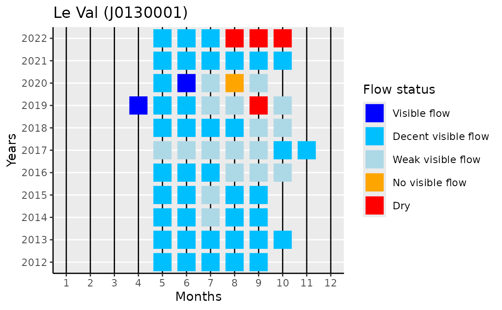
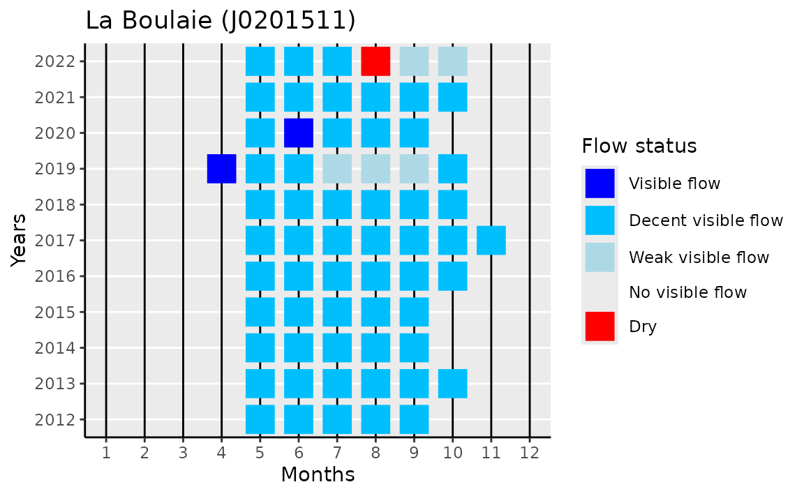
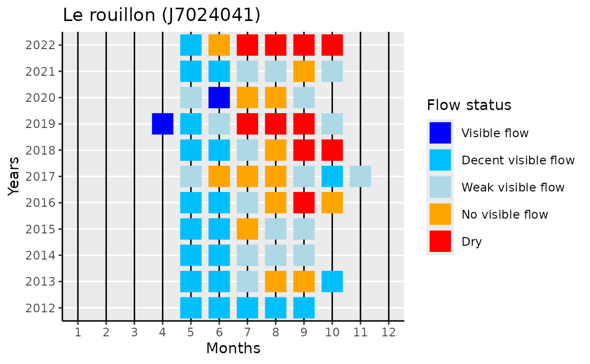
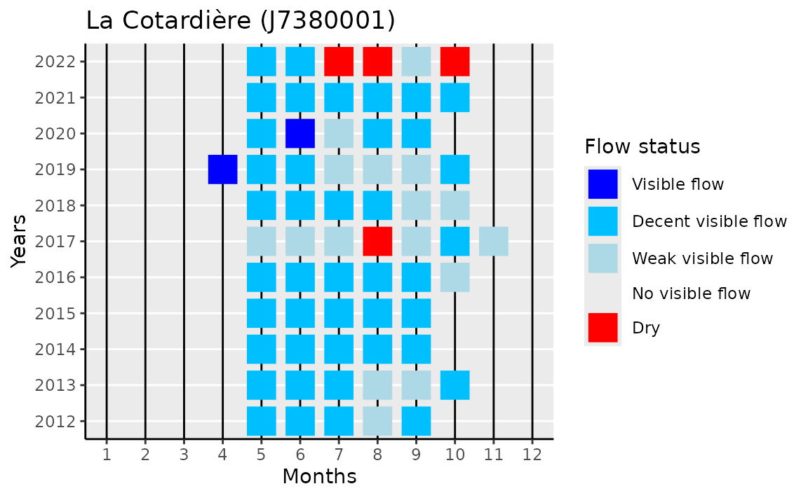
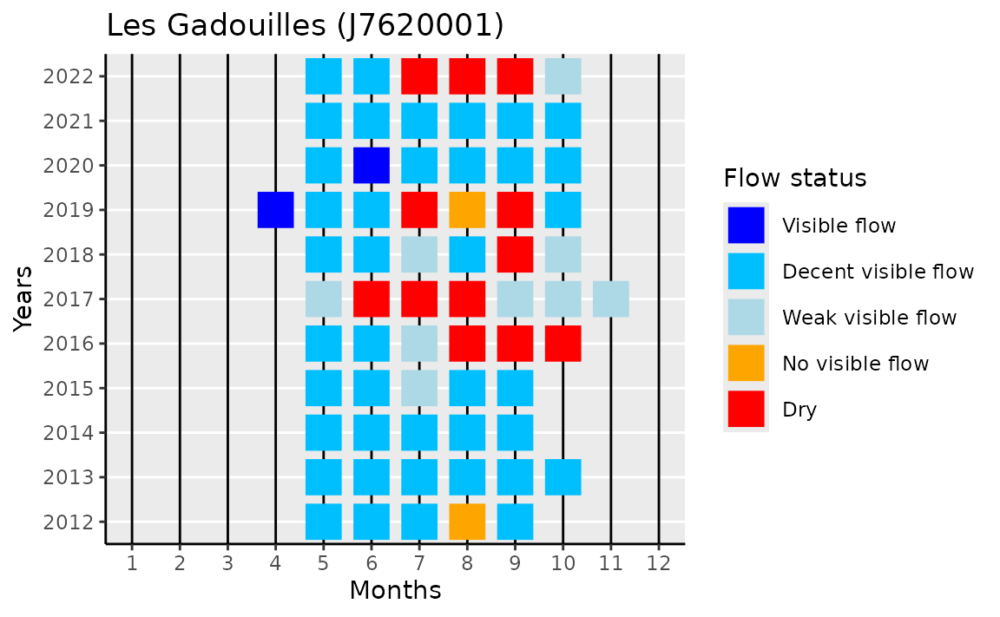

vignettes/example_ecoulement_api.Rmd
example_ecoulement_api.RmdThis vignette shows how to use the hubeau R package
in order to retrieve data from the French streams drought monitoring
network (Observatoire National Des
Etiage, ONDE) from the API “Ecoulement
des cours d’eau” of the Hub’eau portal.
Nationwide, this network encompasses 3000+ observation sites, that are streams stretches selected to reflect the severity of drought events, i.e. that flow in “normal” conditions but dry out in case of drought. Located at the upstream of the river basins, these sites are expected to act as ‘sentinels’ and to provide early warning of the necessity of restricting water withdrawal in rivers and associated water tables.
We illustrate the use of this API for the departement of
Ille-et-Vilaine (code_departement=35) with some example of
maps and charts useful for the interpretation of these data.
my_dept <- "35"First, we need to load the packages used in this vignette for processing data and display results on charts and map:
library(hubeau)
library(dplyr)
#>
#> Attaching package: 'dplyr'
#> The following objects are masked from 'package:stats':
#>
#> filter, lag
#> The following objects are masked from 'package:base':
#>
#> intersect, setdiff, setequal, union
library(sf)
#> Linking to GEOS 3.10.2, GDAL 3.4.1, PROJ 8.2.1; sf_use_s2() is TRUE
library(mapview)
library(ggplot2)“Ecoulement” is one of the 10 APIs that can be queried with the
hubeau R package. These APIs can be listed using the
list_apis() function.
list_apis()
#> [1] "prelevements" "indicateurs_services" "hydrometrie"
#> [4] "niveaux_nappes" "poisson" "ecoulement"
#> [7] "hydrobio" "temperature" "qualite_eau_potable"
#> [10] "qualite_nappes"The list of the API endpoints is provided by the function
list_endpoints.
list_endpoints(api = "ecoulement")
#> [1] "stations" "observations" "campagnes"stations lists the monitoring stationscampagnes lists the surveysobservations is the data itself, indicating if, at the
date of the survey, the river flows or if it is dry (which is assessed
visually in the field).station and observations can be joined
at least by the field code_station.
observations and campagne can be joined by
the field code_campagne.
For each endpoint, the function list_params() gives the
different parameters that can be retrieved.
list_params(api = "ecoulement",
endpoint = "observations")
#> [1] "format" "code_station" "libelle_station"
#> [4] "code_departement" "libelle_departement" "code_commune"
#> [7] "libelle_commune" "code_region" "libelle_region"
#> [10] "code_bassin" "libelle_bassin" "code_cours_eau"
#> [13] "libelle_cours_eau" "code_campagne" "code_reseau"
#> [16] "libelle_reseau" "date_observation_min" "date_observation_max"
#> [19] "code_ecoulement" "libelle_ecoulement" "longitude"
#> [22] "latitude" "distance" "bbox"
#> [25] "sort" "page" "size"
#> [28] "fields" "Accept"Retrieve the available fields.
param_stations <- paste(
list_params(api = "ecoulement", endpoint = "stations"),
collapse = ","
)Download the data.
stations <- get_ecoulement_stations(
code_departement = my_dept,
fields = param_stations
)The stations dataframe is transformed into a
sf geographical object, then mapped.
stations_geo <- stations %>%
select(code_station,
libelle_station,
longitude,
latitude) %>%
sf::st_as_sf(coords = c("longitude", "latitude"), crs = 4326)
mapview::mapview(
stations_geo,
popup = leafpop::popupTable(
stations_geo,
zcol = c("code_station", "libelle_station"),
feature.id = FALSE,
row.numbers = FALSE
),
label = "libelle_station",
legend = FALSE
)A survey encompasses a series of visual observations carried out on stations at the “departement” grain. It is tagged as “usuelle” if it is a routine (i.e. around the 24th of the month from May to September), as “complémentaire” if not (e.g. during very dry periods).
Download the surveys dataframe.
surveys <- get_ecoulement_campagnes(
code_departement = my_dept, # department id
date_campagne_min = "2012-01-01" # start date
)
surveys <- surveys %>%
mutate(code_campagne = as.factor(code_campagne),
year = lubridate::year(date_campagne),
month = lubridate::month(date_campagne)) %>%
select(code_campagne,
year,
month,
libelle_type_campagne)Visualise a few rows.
| code_campagne | year | month | libelle_type_campagne |
|---|---|---|---|
| 96911 | 2022 | 10 | complémentaire |
| 96868 | 2022 | 10 | complémentaire |
| 96831 | 2022 | 9 | usuelle |
| 96724 | 2022 | 9 | complémentaire |
| 96652 | 2022 | 8 | usuelle |
| 96562 | 2022 | 8 | complémentaire |
Retrieve the available fields.
param_obs <- paste(
list_params(api = "ecoulement", endpoint = "observations"),
collapse = ","
)Download the data.
observations <-
get_ecoulement_observations(
code_departement = my_dept,
date_observation_min = "2012-01-01",
fields = param_obs
) We first need to join survey and observation data:
obs_and_surv <- observations %>%
left_join(surveys, by = join_by(code_campagne)) %>%
select(code_station, libelle_station, year, month, code_ecoulement)And, in case of several observations during the same month, we keep the driest status:
obs_and_surv <- obs_and_surv %>%
arrange(code_ecoulement) %>%
group_by(code_station, libelle_station, year, month) %>%
summarise(code_ecoulement = last(code_ecoulement), .groups = 'drop')The flow observations codes are translated in English:
flow_labels <- c(
"1" = "Visible flow",
"1a" = "Decent visible flow",
"1f" = "Weak visible flow",
"2" = "No visible flow",
"3" = "Dry"
)
obs_and_surv$flow_label <- flow_labels[obs_and_surv$code_ecoulement]Custom plot function.
gg_stream_flow <-
function(sel_station, data) {
# selected data
sel_data <- data %>%
filter(code_station == sel_station) %>%
mutate(flow_label = factor(flow_label, levels = flow_labels))
# station name for plot title
station_lab <- unique(sel_data$libelle_station)
# year range
year_range <-
min(sel_data$year, na.rm = T):max(sel_data$year, na.rm = T)
# plot
sel_data %>%
ggplot(aes(x = month,
y = year,
color = flow_label)) +
geom_point(shape = 15, size = 7) +
scale_color_manual(name = "Flow status",
values = c("blue",
"deepskyblue",
"lightblue",
"orange",
"red"),
labels = flow_labels,
drop = FALSE) +
scale_x_continuous(breaks = 1:12,
labels = 1:12,
limits = c(1, 12)) +
scale_y_continuous(breaks = year_range,
labels = year_range) +
labs(x = "Months",
y = "Years",
title = sprintf("%s (%s)", station_lab, sel_station)) +
theme(
axis.line = element_line(color = 'black'),
plot.background = element_blank(),
panel.grid.minor = element_blank(),
panel.grid.major.x = element_line(linewidth = 0.5,
colour = "black"),
panel.border = element_blank()
)
}Display plot for all stations that contain at least one observation with “Dry” status.
dry_stations <- obs_and_surv %>%
filter(code_ecoulement == "3") %>%
pull(code_station) %>% unique
lapply(dry_stations, gg_stream_flow, data = obs_and_surv)